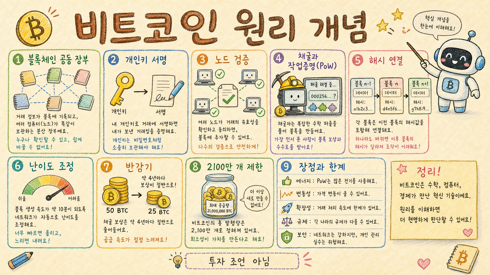

비트코인 원리 개념 보고서
성격: 이 문서는 투자 권유가 아니라, 비트코인이 어떻게 작동하는지 이해하기 위한 개념 설명 보고서입니다.
핵심 결론
- 🧾 비트코인은 중앙 관리자가 없는 공동 거래 장부입니다.
- 🔐 사용자는 개인키로 거래를 서명하고, 노드는 규칙에 맞는지 검증합니다.
- ⛏️ 채굴은 새 코인을 캐는 일만이 아니라, 작업증명으로 새 블록을 붙이는 검증 경쟁입니다.
- 📉 2100만 개 공급 제한과 반감기는 비트코인의 발행 규칙입니다.
- ⚖️ 탈중앙성과 투명성이라는 장점이 있지만, 에너지·변동성·확장성·규제·보관 리스크도 함께 봐야 합니다.
보고서모드1 인포그래픽

미색 종이 위 색연필·크레용 손그림 학습 노트 스타일
1. 비트코인을 한 문장으로 이해하기
비트코인은 은행, 카드사, 중앙은행 같은 한 기관이 장부를 관리하지 않고, 전 세계 참여자들이 같은 거래 기록을 검증하며 유지하는 디지털 화폐 네트워크입니다.
여기서 핵심은 “인터넷에 떠다니는 동전”이 아니라 누가 얼마를 보냈는지 기록한 장부를 모두가 같은 규칙으로 확인한다는 점입니다.
2. 블록체인: 거래 장부를 페이지처럼 이어 붙이기
블록체인은 거래들을 일정한 묶음인 블록에 담고, 이 블록들을 시간순으로 연결한 장부입니다. 새 블록은 이전 블록의 해시값을 포함하기 때문에, 과거 기록 하나를 바꾸면 뒤에 이어진 연결도 함께 깨집니다.
| 개념 | 쉬운 비유 | 역할 |
|---|---|---|
| 블록 | 장부의 한 페이지 | 여러 거래를 묶음 |
| 체인 | 페이지를 순서대로 묶은 책 | 거래 기록의 시간순 연결 |
| 해시 | 내용이 바뀌면 달라지는 지문 | 위조·변경 탐지 |
3. 해시: 조작을 들키게 만드는 디지털 지문
해시는 어떤 데이터를 넣으면 고정된 길이의 값이 나오는 함수입니다. 입력 내용이 아주 조금만 바뀌어도 결과가 크게 달라집니다. 그래서 블록 안의 거래를 바꾸면 블록 해시가 달라지고, 다음 블록이 기억하던 이전 해시와 맞지 않게 됩니다.
단, 해시가 마법처럼 모든 공격을 막는 것은 아닙니다. 비트코인의 강도는 해시 연결, 작업증명 비용, 많은 노드의 검증이 함께 작동할 때 생깁니다.
4. 지갑, 개인키, 공개키, 주소
비트코인 지갑은 코인을 직접 보관하는 금고라기보다, 코인을 움직일 권한인 개인키를 관리하는 도구에 가깝습니다.
| 개념 | 역할 | 주의점 |
|---|---|---|
| 개인키 | 거래를 승인하는 비밀 권한 | 잃어버리면 복구가 어렵고, 유출되면 탈취 위험 |
| 공개키/주소 | 받는 사람을 식별하는 공개 정보 | 계좌번호처럼 공유 가능하지만 주소 확인은 필수 |
| 전자서명 | 개인키 소유자가 보낸 거래임을 증명 | 개인키를 공개하지 않고 권한을 증명 |
5. 거래 검증은 어떻게 진행될까
- 사용자가 “A 주소에서 B 주소로 얼마를 보낸다”는 거래를 만듭니다.
- 지갑은 개인키로 거래에 전자서명을 붙입니다.
- 거래는 네트워크의 여러 노드로 전파됩니다.
- 노드는 서명, 잔액, 이중지불 여부, 비트코인 규칙 위반 여부를 확인합니다.
- 검증된 거래는 채굴자가 블록 후보에 넣을 수 있습니다.
- 새 블록이 만들어지면 다른 노드들이 다시 검증하고, 유효할 때만 장부에 받아들입니다.
6. 노드: 비트코인의 심판
노드는 비트코인 소프트웨어를 실행하며 거래와 블록이 규칙에 맞는지 확인하는 참여자입니다. 중요한 점은 채굴자가 블록을 제안할 수는 있지만, 노드가 틀린 블록을 거부할 수 있다는 점입니다.
이 구조 덕분에 비트코인은 특정 회사 서버 하나가 아니라, 많은 참여자가 같은 규칙을 독립적으로 검증하는 탈중앙 네트워크가 됩니다.
7. 작업증명(PoW)과 채굴
채굴자는 거래를 모아 새 블록 후보를 만들고, 특정 조건을 만족하는 해시를 찾기 위해 많은 계산을 반복합니다. 이 계산 경쟁을 작업증명 Proof of Work이라고 합니다.
성공한 채굴자는 새 블록을 네트워크에 알리고, 다른 노드가 검증해 받아들이면 보상으로 새 비트코인과 거래 수수료를 받습니다. 즉 채굴은 단순히 “코인을 캐는 일”이 아니라 장부에 새 페이지를 붙이는 비용 있는 경쟁입니다.
8. 난이도 조정: 약 10분 리듬을 맞추는 장치
채굴 장비가 많아지면 블록이 너무 빨리 생길 수 있고, 장비가 줄면 너무 느려질 수 있습니다. 비트코인은 약 2주마다 난이도를 조정해 평균적으로 약 10분에 한 블록이 만들어지도록 맞춥니다.
이 덕분에 특정 시기에 채굴자가 갑자기 늘어나도 발행 속도가 마음대로 빨라지지 않습니다.
9. 반감기와 2100만 개 공급 제한
비트코인은 새로 발행되는 양이 코드 규칙으로 정해져 있습니다. 블록 보상은 약 4년마다 절반으로 줄어드는 반감기를 거치며, 최종 공급량은 약 2100만 개를 넘지 않도록 설계되어 있습니다.
이 구조는 중앙은행식 재량 발행과 다르게, 미리 공개된 발행 스케줄을 따르는 통화 정책입니다. 다만 희소성이 곧 가격 상승을 보장한다는 뜻은 아닙니다.
10. 탈중앙성이 의미하는 것
중앙 서버 없음
하나의 회사 데이터베이스가 아니라 여러 노드가 장부를 검증합니다.
규칙 기반 합의
권위자를 믿기보다 공개 규칙과 검증 절차를 따릅니다.
검열 저항성
특정 기관이 임의로 거래를 막기 어렵게 설계되어 있습니다.
11. 장점
- 투명성: 누구나 장부와 발행 규칙을 검증할 수 있습니다.
- 희소성: 2100만 개 제한과 반감기 구조가 있습니다.
- 국경 없는 전송: 인터넷 기반으로 전 세계 전송이 가능합니다.
- 검열 저항: 중앙기관 허가 없이 네트워크 참여가 가능합니다.
- 네트워크 효과: 가장 오래되고 널리 알려진 블록체인 네트워크입니다.
12. 한계와 비판적 관점
| 쟁점 | 내용 | 균형 있게 볼 점 |
|---|---|---|
| 에너지 | 작업증명은 많은 전력을 씁니다. | 보안 비용이라는 주장과 환경 부담이라는 비판이 공존합니다. |
| 변동성 | 가격이 크게 오르내릴 수 있습니다. | 개념 이해와 투자 판단은 분리해야 합니다. |
| 확장성 | 기본 체인의 처리량은 제한적입니다. | 라이트닝 네트워크 같은 보조 계층이 연구·사용됩니다. |
| 규제 | 국가별 세금, 거래소, 결제 규칙이 다릅니다. | 기술은 글로벌하지만 사용자는 현지 규정을 확인해야 합니다. |
| 보안 오해 | 블록체인이 안전해도 개인키를 잃으면 끝입니다. | 거래소 해킹, 피싱, 보관 실수는 사용자의 현실적 위험입니다. |
최종 정리
비트코인은 “누군가를 믿는 시스템”을 “누구나 검증할 수 있는 규칙의 시스템”으로 바꾸려는 시도입니다. 거래는 개인키로 승인되고, 노드는 규칙을 검증하며, 채굴자는 작업증명으로 새 블록을 붙입니다.
그래서 비트코인을 이해할 때는 가격보다 먼저 블록체인 장부, 해시 연결, 작업증명, 노드 검증, 발행 제한, 개인키 보관을 이해하는 것이 중요합니다.
주의: 이 보고서는 기술·개념 설명이며, 비트코인 매수·매도·보유를 권하는 투자 조언이 아닙니다.
Jeremy's Insight by 🤖 딸깍봇 https://blog.naver.com/jeremylee0213